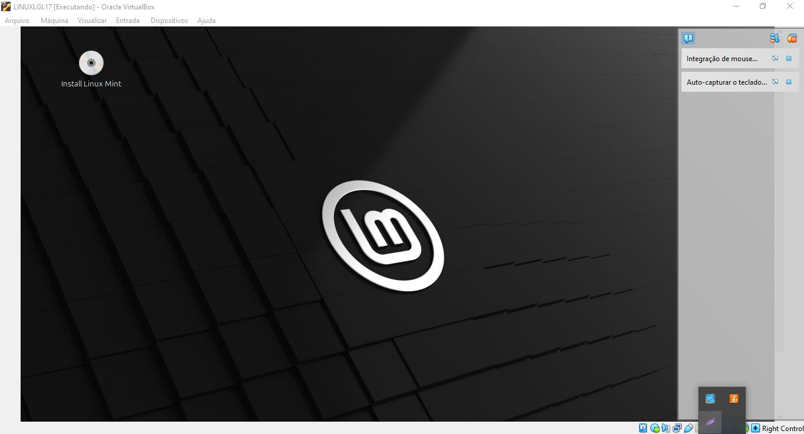

Nessa parte vemos a tela inicial do Linux, que surgiu através da instalação do Sistema Operacional Linux que fiz na faculdade, foi necessário a utilização de uma máquina virtual chamada Oracle e do uso de parte do armazenamento do computador para realizar a instação e configuração do Linux, feita para fins de aprendizado e conhecimento de sistemas. Essa atividade foi muito divertida e importante, pois foi como um treinamento para uma tarefa avaliativa que veio a ter posteriormente no fim do semestre.
Clique aqui para retornar à página inicial.